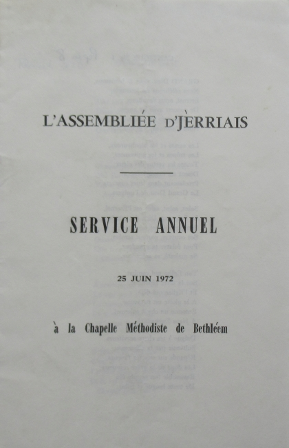

Appraichant dé 150 pèrsonnes lus rêunîtent dans la Chapelle Méthodiste dé Bethléem, dînmanche, lé 25 dé juîn, pour lé Sèrvice Annuel.
Lé Sieur P.C. Le Ruez annoncit les cantiques et fît les priéthes en Français, et lé tchoeur chantit l'Oraison Dominicale auprès la preunmié priéthe.
La preunmié léçon, eune traduction par deux fidèles membres dé L'Assembliée d'Jèrriais du psaume 103, fut liue par la Dlle. K. Le Boutillier, Vice-Présidente, et la deuxième léçon (St. Luc 17, vèrsets 11 à 21), en Jèrriais étout, fut liu par lé Président, l'Sénateu P.J. Romeril.
Lé Sieur Philip Le Ruez fît un bouan sèrmon et prînt pour san texte lé deuxième vèrset du psaume 103, "Mén âme benit l'Êternel et n'oublyie pas autcheune dé ses bontés".
Lé Sieur Le Ruez montrit plusieurs exempl'yes dans san sèrmon des bénédictions dé chutte vie qué j'avons à être r'mèrciant pour. Duthant l'Otchupâtion, en s'n allant marchant d'la Grève d'Azette en ville pour prendre un sèrvice un dînmanche, i' rencontrit un p'tit garçon qu'était à s'balanchi sus eune hèche en mangeant du pain sé. Ch'tait lé jour auprès que lé Vega avait apporté d'la flieu. Dans ches temps nou 'tait privés d'un tas d'choses. Dépis la dgèrre, l'Île a joui dé hardi d'tchi. Les gens en sont-i' pus heûtheurs ou satisfaits, en sont-i' èrconnaîssants? Eune autre chose qué lé Psaume dit est qué la bonté dé l'Êternel duthe tréjous. J'dév'thaîmes nos rapp'ler dé toutes les choses qui nos sont précieuses, not' santé, nos pathents, nos anmîns, nout' caractéthe - tout d'tchi qui nos a 'té donné. J'pouvons pas l'acater. J'soummes tréjous bein èrconnaîssants quand tout va bein, mais ch'n'est pas si facile quand d'tchi est mal. Les êpreuves dans la vie nos font bein sympathiques à d'autres quand i' sont troubliés.
Lé Sieur Le Ruez finnit en d'mandant à la congrégâtion dé penser que j'soummes p't-être tous dans difféthentes positions et travas, et j'avons difféthents problèmes. Mais ch'n'est pas suffisant d'exprînmer nos r'mèrciêments: i' faut lé montrer dans la vie qué jé m'nons touos les jours.
Duthant lé sèrvice les bouans vièrs cantiques, "Grand Dieu, nous Te bénissons", "J'ai soif de Ta présence", "Marchons avec joie", "Oh croyez que Dieu vous donne", "La Voix de Christ nous appelle", et iun traduit par lé Sieur George F. Le Feuvre, "Lé chein tchi plieuthe tout seu", futent chantés auvec bouan tchoeu et bouanne vouaix aussi bein par la congrégâtion coumme par lé tchoeur condit par l'Sieur G.A. Le Breton auvec Mde. Mazel Le Ruez à l'orgue.
JEP Juilet 1972
Viyiz étout: